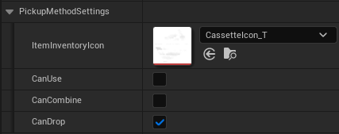
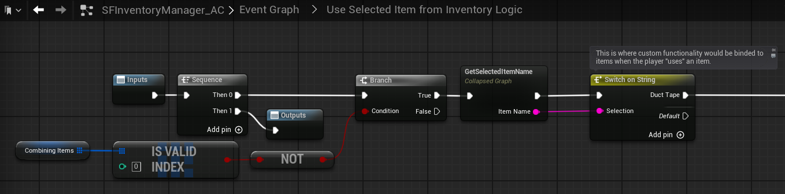
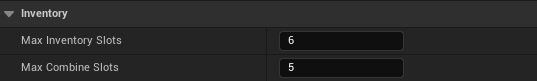
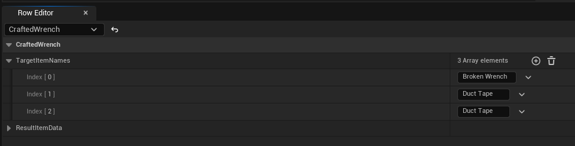
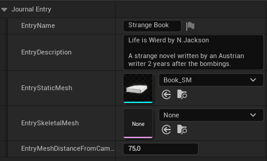
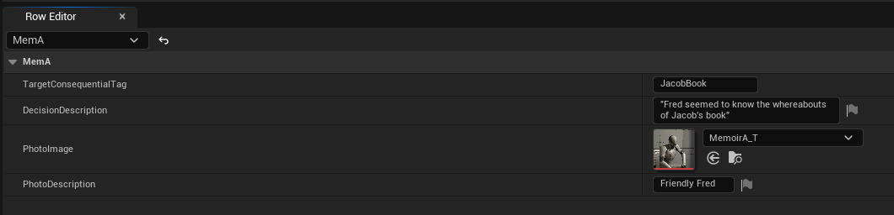

背包、日志、回忆录与任务
Inventory Manager 一个人管四件事：快捷背包、日志、回忆录、任务队列。这一章讲清它们各自的数据从哪来、怎么增删，并给出一条「捡东西 → 更新任务 → 交任务」的完整链路。
官方把这个组件叫 “Inventory Manager”，但它其实是一组容器的总管：背包是容器，日志是容器， 回忆录和任务队列也是容器。它们共享同一套“增、删、改”的接口风格，学会一个就会四个。
四个容器，一张地图
快捷背包：工具栏，不是全屏
SF 的背包刻意做成底部工具栏，而不是打开一个占满屏幕的大界面——目的是让玩家不脱离游戏画面。 选中某个道具后，可以执行“使用 / 组合 / 丢弃”，具体允许哪些，由道具自己的拾取设置决定。
每个道具的 Pickup Method Settings 里：

| 开关 | 作用 | 实现位置 |
|---|---|---|
Can Use |
能不能在背包里按“使用” | 使用后干什么，写在 SFInventoryManager_AC 的 Use Selected Item 逻辑里（一个 Switch on String，按道具名分支） |
Can Combine |
能不能参与组合 | 组合配方写在数据表 ItemCombinations_DT 里 |
Can Drop |
能不能丢到地上 | 一般保持开启；关键道具可关掉，防止玩家把自己卡死 |

Switch on String 就是给每个道具写效果的地方。组件本身还有两个全局值：Max Inventory Slots（最多几种道具）和 Max Combine Slots（一次最多组合几件，防止玩家瞎试出超长序列）。

组合配方按顺序匹配：A+B 和 B+A 是两条不同的配方，可以产生不同结果。
想给玩家“试错空间”，就把 Max Combine Slots 设大一点；
不想让他们乱试，设成 2 即可。组合列表几秒内没有新道具加入会自动超时清空。

ItemCombinations_DT 的一行：CraftedWrench 需要按顺序放入 [Broken Wrench, Duct Tape, Duct Tape]，结果由 ResultItemData 决定。手动加/删道具：两个函数
| 函数 | 参数 | 说明 |
|---|---|---|
Add Item to Inventory |
Interactable Data（道具数据）、Quantity（数量）、Pending Kill（要销毁的 Actor） |
把一件道具直接塞进背包。第三个参数用来“顺便销毁地上的那个物体” |
Remove Selected Item From Inventory |
Remove by Name（可选）、Spawn（是否掉到地上） |
按名字删除；不填名字就删“当前选中的那个”。Spawn 为真时会在准星位置生成掉落物 |
Find Item in Inventory by Name（查数量）、DoItemsArrayExistInInventory（批量检查）、
EditItemInInventoryByName（运行时改道具数据）。这些在 1.1 / 3.1 更新里加入，做任务计数时非常有用。
日志：记录“见过但没带走”的东西
日志和背包的区别是：日志里的东西不在玩家身上。它更像“图鉴”或“线索本”， 适合放看过的海报、读过的信、墙上的符号。日志条目同样支持 3D 检视。
两种添加方式：
- 做成关卡里的物品：新建蓝图，父类选
JournalItemMaster_BP，它比普通可交互物多一个Journal Entry数据段。 - 代码里直接加：调用 Inventory Manager 的
Add Journal Entry（用Split Struct展开填参数），删除用Remove Journal Entry（按条目名）。
Journal Entry 里要填四样东西：
| 字段 | 说明 |
|---|---|
Entry Name | 条目名，显示在日志左侧列表 |
Entry Description | 较长的描述文字，写背景故事或用途 |
Entry Static / Skeletal Mesh | 中间 3D 展示用的模型（骨骼网格可以有物理飘动效果） |
Entry Mesh Distance From Camera | 模型离镜头多远，按模型尺寸调 |

它不占背包格子、不会被丢弃，所以非常适合做“玩家一定会看到、但拿不走”的信息： 墙上的告示、尸体旁的信、监控录像。想给玩家一个“回头看”的档案库，就用日志。
回忆录：把“你做过什么”变成相册
回忆录（Memoir）是 SF 里很有叙事味道的设计：玩家做过的关键决定，会自动变成一条带图片的记录。 它的机制非常“数据驱动”——你几乎不用写蓝图，只要填表 + 打标记。
-
在数据表里加一行
打开
MemoirEntry_DT（在SF → Core → Blueprints → Data Tables下），新增一行。 -
填四个字段
Target Consequential Tag（触发用的剧情标记名）、Decision Description（这段回忆的文字）、Photo Image（配图）、Photo Description（图片说明）。 -
在剧情里打上这个标记
调用 Inventory Manager 的
Edit Consequential Tags，把Add Tag设成你刚才写的标记名。 标记一加，回忆录自动出现。 - （可选）弹个提示 加标记的同时弹一个自定义通知，告诉玩家“回忆录已更新”。

移除标记不会删除已经生成的回忆录。 官方文档写的是“移除标记时回忆录也会移除”， 但社区实测（Jay 的教程）指出并不会。如果你需要“反悔就消失”，得手动调用删除逻辑。 这种官方文档与实测不一致的地方，建议以你的工程实测为准。
任务：主线与支线
SF5 把任务重构成了主线（Main）与可选（Optional/Side）两类。 任务是“队列”结构：同一时间只有一条主线显示在右上角，完成后自动顶上下一条。
| 函数 / 节点 | 用途 |
|---|---|
Add Main Task to Queue | 加一条主线任务（传入 TaskInfo_S 结构） |
Complete Current Main Task | 完成当前主线，队列自动前进 |
Fail Current Task / 设状态 | 标记失败 |
Edit Target Main Task in Queue | 修改进行中的任务（标题、描述等） |
Find Task in Queue by Header | 按标题查任务，用于“确认我完成的是对的那条” |
OnTaskInitialized（事件） | 任务初始化时触发，用来接自定义逻辑 |
TaskInfo_S 结构里可以塞：标题（Header）、描述、是否计时、时限等。
如果填了时限，玩家会看到倒计时，时间到自动失败；填 0 表示不限时。
TaskInfo_S 在 SF → Core → Blueprints → Structures 下，可以直接往里加变量
（例如“任务类型枚举”“奖励分数”）。加完记得编译，已有数据表的行需要重新填。
完整案例：三根骨头的支线
把上面四块串起来，就是一个最经典的“跑腿任务”。这也是理解 SF 的最佳练习：
-
NPC 给任务
对话回复里接
On Dialogue Reply→Switch on String匹配那句台词 → 调Add Main Task to Queue，标题写“收集骨头（0/3）”。 -
玩家捡骨头
骨头道具用 Default 交互（不是 Quick Pickup），在
Event Interacted With里： 先Find Item in Inventory by Name查已收集数量 →Add Item to Inventory→ 用Edit Target Main Task in Queue把标题改成“收集骨头（1/3）”。 -
集齐后打标记
当数量达到 3，再调一次
Edit Consequential Tags加上HasAllBones标记， 并把任务标题改成“回去找教授”。 -
交任务
NPC 的对话里有一条被
HasAllBones标记解锁的回复。玩家选它时： 移除标记、调用Complete Current Main Task、再给一段“谢谢”的字幕。
如果你把“集齐判断”写在每次拾取之后，那玩家在接任务之前就把三根骨头捡了，就永远触发不了这个判断。
解决办法：任务开始时先查一次背包（Find Item in Inventory by Name 的数量 ≥ 3 就直接跳到“回去找教授”）。
这类“时序漏洞”是叙事游戏最常见的 Bug，做任务时一定先想清楚。
本章的坑
| 现象 | 原因 | 解决 |
|---|---|---|
| 背包里有物品但没图标 | 没设 Item Inventory Icon | 补一张 Texture2D |
| “使用”按了没反应 | Can Use 打开了，但 Use Selected Item 里没有对应道具名的分支 | 在 Switch on String 里加一个 case |
| 组合没反应 | 数据表里没有这条配方，或顺序反了 | 检查 ItemCombinations_DT 的条目顺序 |
| 任务不显示 | 加的是支线，或队列里已有一条未完成的主线 | 先完成当前主线，或改用支线函数 |
| 日志条目删不掉 | 传的名字和 Entry Name 不一致 | 遍历日志数组取准确名字 |
容器讲完了。接下来是这个框架最有“故事感”的部分：对话与选择。